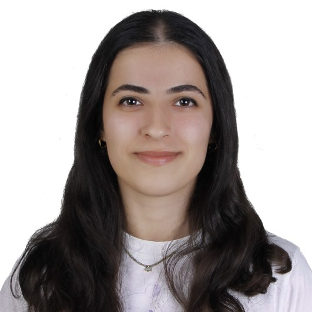

Hakkımızda
Proje Yürütücüsü: Berkant Ağur
Danışman: Dr. Öğr. Üyesi Barış Ata
Takım Üyeleri: Ayşenur Ekiz, Beyza Erdemir, Tuğçe Çalışoğlu
Proje Süresi: Mart 2024 – Mayıs 2025
Bu proje, Türkiye'deki orman yangınlarının uzamsal dağılımını harita üzerinde gösteren, dinamik ve etkileşimli bir web arayüzü sunmaktadır. Uydu görüntüleri ve saha verileriyle desteklenen bu harita, yangın yoğunluklarını analiz ederek afet yönetimine katkı sağlamayı amaçlamaktadır.
Takım Üyeleri
Ayşenur Ekiz
Berkant Ağur

Beyza Erdemir
Tuğçe Çalışoğlu